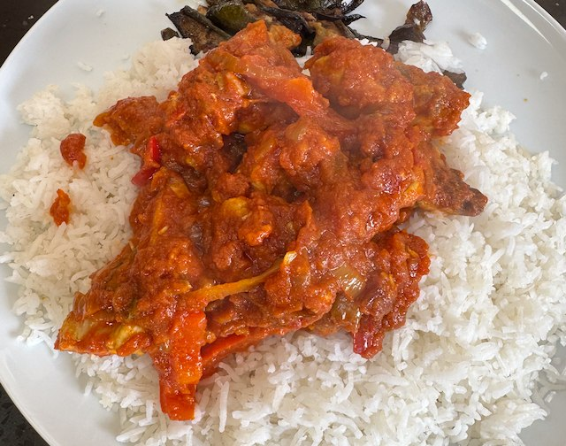

Chicken Jalfrezi

From bbc good food. Serve with rice.
Ingredients
- Sauce
- ½ onion, chopped
- 2 garlic cloves, chopped
- 1 green chilli, chopped
- 1 tbsp ground cumin
- 1 tbsp ground coriander
- 1 tsp turmeric
- 1 tin tomatoes
- sunflower oil
- Chicken and Veg
- 3 chicken breasts, 2cm dice
- 1 tsp ground cumin
- 1 tsp ground coriander
- 1 tsp turmeric
- ½ onion, sliced
- 1 red pepper, sliced
- 2 red chilli, chopped
- 2 tsp garam masala
- salt
Method
Prepare the chicken. Sprinkle the cumin, coriander and turmeric over the chicken. Mix and refrigerate until needed.
Sauce Part 1. Fry the onion until brown, 20-30 min, then add the garlic and chilli and fry for another 2 min. Liquidate.
Sauce Part 2. Heat a pan to medium. Add oil, cumin, coriander, turmeric and fry for 2 min. Then add the tomatoes, and liquidate. Cook on a low heat for 20 min.
Veg. Fry the onions until golden. Add the red pepper and chilli and fry some more.
Sauce. Combine the tomatoes and onion mix to make the sauce, taste for salt, and keep warm on a low heat.
Chicken. Add the chicken to a hot frying pan,sprinkle with salt and cook for a few min. Flip over the chicken bits and cook for a few min more.
Assemble. Mix sauce and veg into the chicken, sprinkle with garam masala and stir.